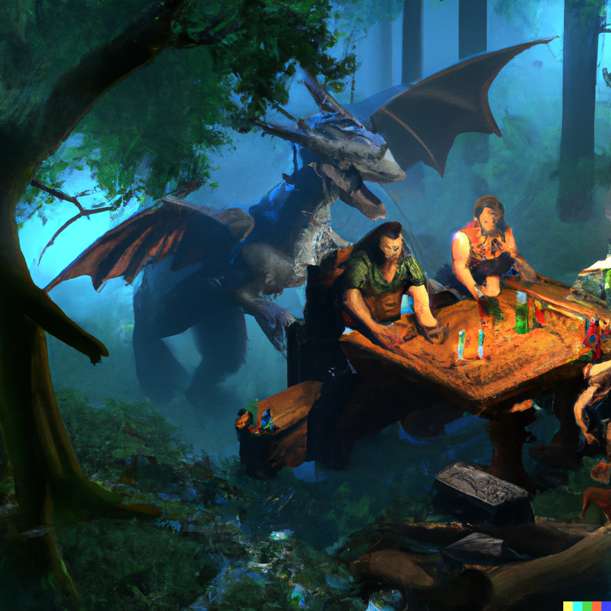

O QUE É RPG DIGITAL?
Os RPGs virtuais são jogados em computadores ou consoles de jogos. Os jogadores assumem o papel de personagens dentro de um mundo virtual, muitas vezes controlando avatares. Exemplos populares de RPGs virtuais incluem "The Elder Scrolls," "World of Warcraft" e "Final Fantasy."